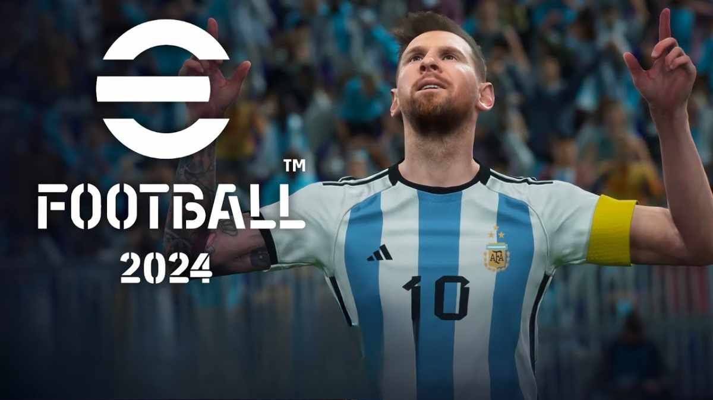

Một bách thư cho tựa game Efootball
eFootball (trước năm 2021-2022 là Pro Evolution Soccer (PES)) là một tựa game thể thao điện tử về bóng đá của Konami và là dòng game kế nhiệm của series International Superstar Soccer. Game thường được ra mắt vào cuối tháng 9 hoặc đầu tháng 10 hằng năm trên toàn thế giới (ngoại trừ một số khu vực).
